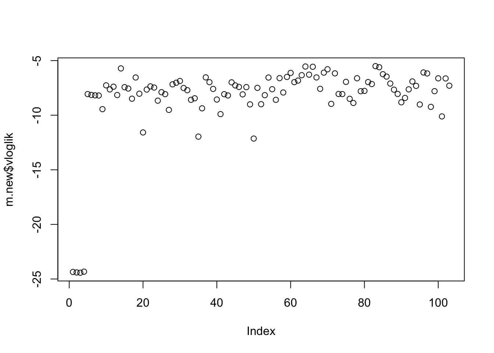
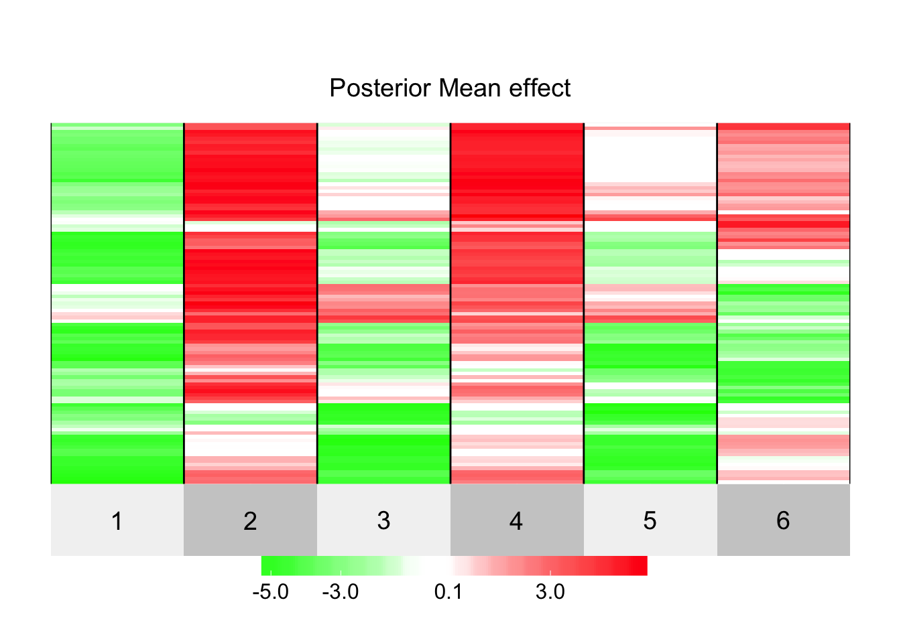
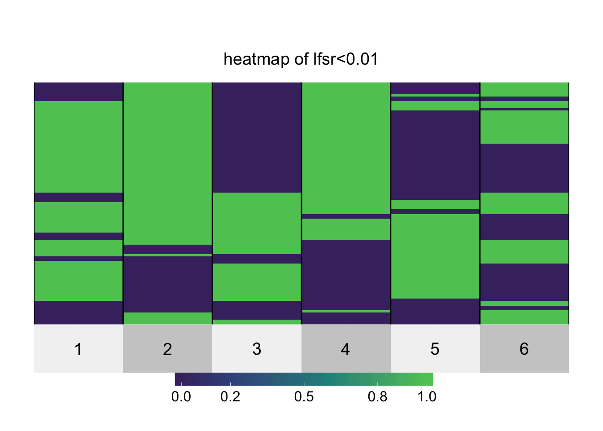

Last updated: 2017-06-24
Code version: 100d44c
Here we read in the data.
z.old = read.table("../data/bmass.HaemgenRBC2016.Vs2.PreviousSNPs.ZScores.hclust.vs1.txt",header=TRUE,stringsAsFactors = FALSE)
z.new = read.table("../data/bmass.HaemgenRBC2016.Vs2.NewSNPs.ZScores.hclust.vs1.txt",header=TRUE,stringsAsFactors = FALSE)
z.old.m = as.matrix(z.old[,2:7])
z.new.m = as.matrix(z.new[,2:7])
V = diag(6)
V[1,]=c(0.5,-0.47,0.80,-0.47,0.73,-0.13)
V[2,2:6] = c(0.5,0.12,0.87,0.12,0.03)
V[3,3:6] = c(0.5,0.04,0.93,-0.1)
V[4,4:6] = c(0.5,0.20,0.46)
V[5,5:6] =c(0.5,0.22)
V[6,6] = 0.5
V = V+t(V)First we fit mash to the old hits.
IMPORTANT NOTE: really we should do this on a random sample of all zs.. but I don’t have that now.
#devtools::install_github("stephenslab/mashr")
library("mashr")
d.old = set_mash_data(z.old.m, Shat=1, V=V)
U.c = cov_canonical(d.old)
U.pca = cov_pca(d.old,3,subset=NULL)svd currently performed on Bhat; maybe should be Bhat/Shat?U.d = cov_ed(d.old,U.pca,subset=NULL)
m.old=mashr::mash(d.old,c(U.c,U.d),algorithm.version = "R",outputlevel=99) - Computing 622 x 316 likelihood matrix.
- Likelihood calculations took 0.14 seconds.
- Fitting model with 316 mixture components.
- Model fitting took 0.28 seconds.
- Computing posterior matrices.
- Computation allocated took 0.01 seconds.Apply mash to the new data using fit from old data.
d.new = set_mash_data(z.new.m, Shat=matrix(1,nrow=103,ncol=6), V=V)
m.new = mashr::mash(d.new,g=ashr::get_fitted_g(m.old),fixg=TRUE) - Computing 103 x 316 likelihood matrix.
- Likelihood calculations took 0.01 seconds.
- Computing posterior matrices.
- Computation allocated took 0.00 seconds.Looking at the log-likelihoods for the observed z under the fitted model, we see some very strong outliers… indicates a potential problem!
plot(m.new$vloglik)
postmean = ashr::get_pm(m.new)
lfsr = ashr::get_lfsr(m.new)
#sign_of_biggest_effect= apply(postmean, 1, function(x){m = which.max(abs(x)); #return(sign(x[m]))})
#postmean = postmean*sign_of_biggest_effect
postmean = postmean * sign(svd(postmean)$u[,1])
superheat::superheat(postmean,
pretty.order.cols = FALSE,pretty.order.rows=TRUE, title="Posterior Mean effect", heat.pal = c(rgb(seq(0,1,length=5),1,seq(0,1,length=5)),rgb(1,seq(1,0,length=5),seq(1,0,length=5))))
superheat::superheat(1*(lfsr<0.01),pretty.order.rows=TRUE, title ="heatmap of lfsr<0.01")
sessionInfo()R version 3.3.2 (2016-10-31)
Platform: x86_64-apple-darwin13.4.0 (64-bit)
Running under: OS X El Capitan 10.11.6
locale:
[1] en_US.UTF-8/en_US.UTF-8/en_US.UTF-8/C/en_US.UTF-8/en_US.UTF-8
attached base packages:
[1] stats graphics grDevices utils datasets methods base
other attached packages:
[1] bindrcpp_0.2 mashr_0.1-18
loaded via a namespace (and not attached):
[1] Rcpp_0.12.11 bindr_0.1
[3] git2r_0.18.0 plyr_1.8.4
[5] iterators_1.0.8 tools_3.3.2
[7] digest_0.6.12 tibble_1.3.3
[9] evaluate_0.10 gtable_0.2.0
[11] lattice_0.20-35 pkgconfig_2.0.1
[13] rlang_0.1.1 Matrix_1.2-10
[15] foreach_1.4.3 yaml_2.1.14
[17] parallel_3.3.2 mvtnorm_1.0-6
[19] dplyr_0.7.1 stringr_1.2.0
[21] knitr_1.16 REBayes_0.85
[23] rprojroot_1.2 grid_3.3.2
[25] superheat_0.1.0 glue_1.1.1
[27] R6_2.2.2 rmarkdown_1.6
[29] rmeta_2.16 ggplot2_2.2.1
[31] ashr_2.1-19 magrittr_1.5
[33] backports_1.1.0 scales_0.4.1
[35] codetools_0.2-15 htmltools_0.3.6
[37] MASS_7.3-47 assertthat_0.2.0
[39] colorspace_1.3-2 labeling_0.3
[41] stringi_1.1.5 Rmosek_7.1.2
[43] lazyeval_0.2.0 pscl_1.4.9
[45] doParallel_1.0.10 munsell_0.4.3
[47] truncnorm_1.0-7 SQUAREM_2016.8-2
[49] ExtremeDeconvolution_1.3This R Markdown site was created with workflowr